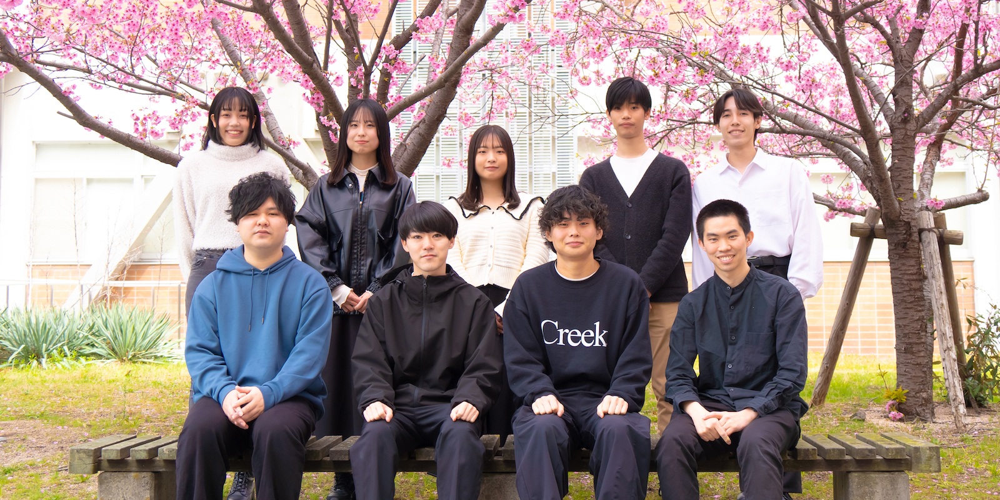
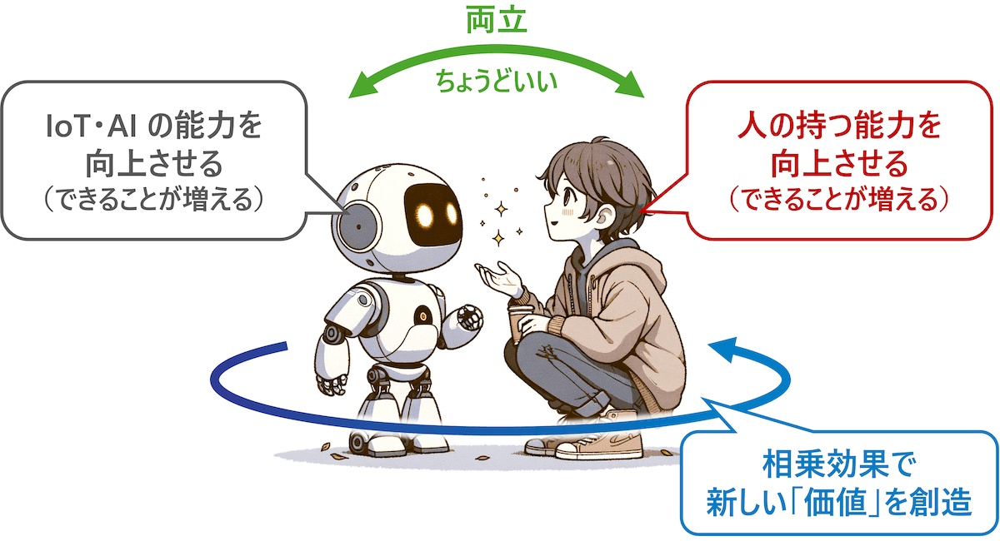
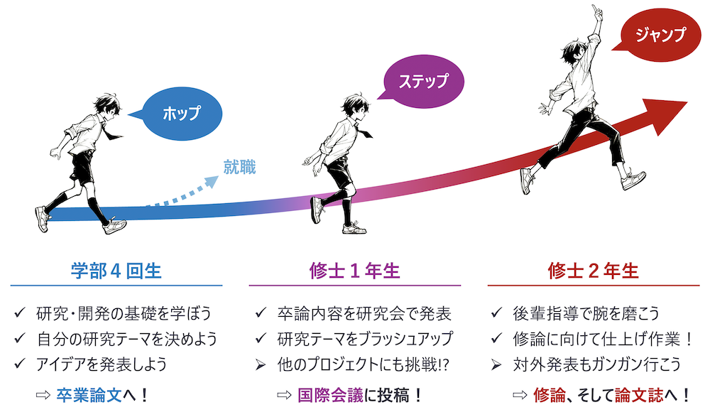
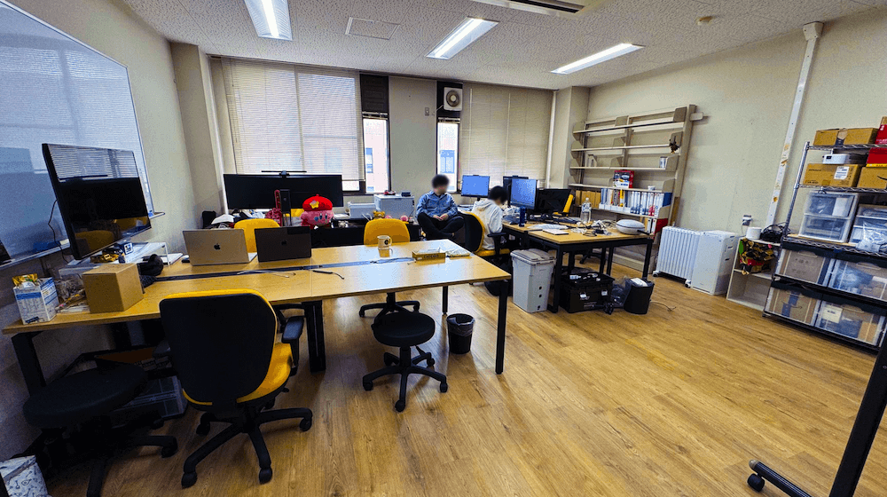
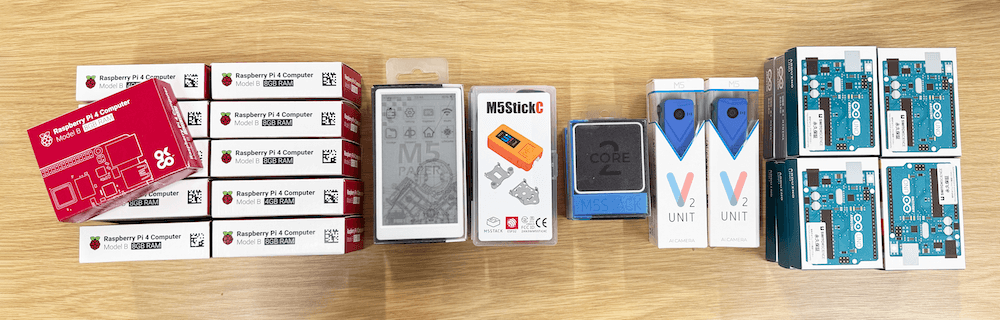
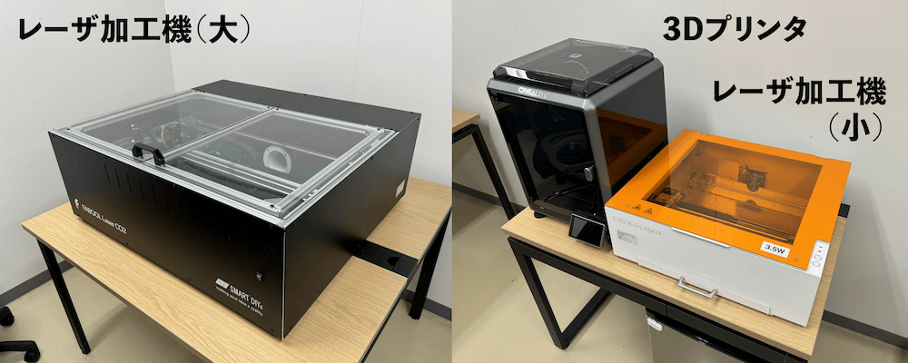
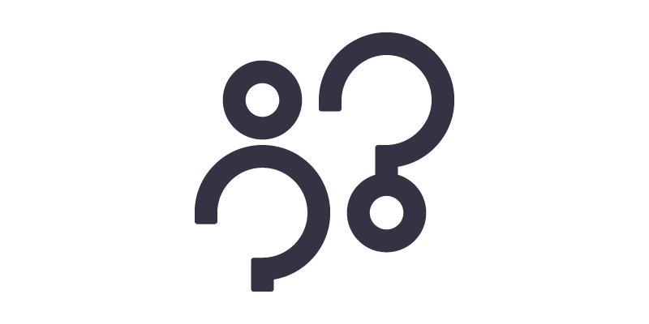
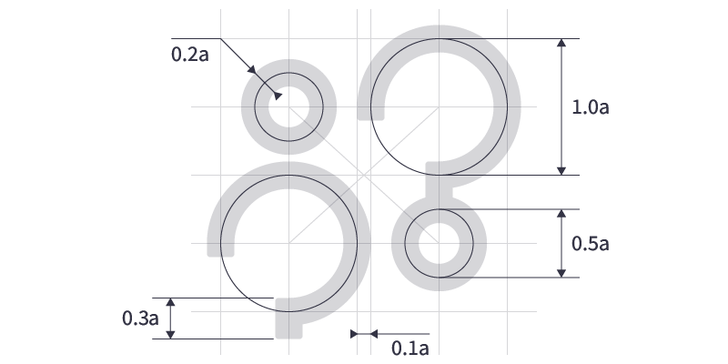

コンヴィヴィアルコンピューティング研究室について
岡山大学コンヴィヴィアルコンピューティング研究室（Convivial Computing Laboratory）は、2024年4月に発足しました。新たに5名の新B4学生を迎え、学生8名・スタッフ2名の研究室となりました。 
本研究室では、Society 5.0時代に向けた「IoT・AI」と私たち「人」の“自立共生”に向けた技術の研究を通じて、個人から社会全体に至るまで、人が生き生きと暮らせる（= Convivialな）環境・社会を実現することを目指しています。コンヴィヴィアル（Convivial）とは、ラテン語の“Convivere”に由来し、「con-（with）」+「vivere（live）」=「自立共生」を意味する単語です。他にも「陽気な」「友好的な」といった意味も含まれています。理論的な研究だけでなく実際に動くシステムとして実装する応用的な研究まで、幅広い領域を対象としています。
現代におけるIoT・AIは、人の生活を便利にする「ただの道具」としての役割を超越し、もはや人の身体・頭脳の一部と言えるものや、人の生活に欠かせないパートナーと言えるものへと進化しつつあります。しかしながら、これまでの科学技術の発展にともない私達の生活は便利になった一方で、人に本来備わっていたはずの「能力」が失われてしまう、といったことが起きています。特に、近年のIoT・AIの発展は目覚ましく、この流れはますます加速していくことが予想されます。本研究室では、そのような時代において「IoT・AIと人のより良い関係性とは何か？」という問いを、情報科学を中心とした分野横断的なアプローチで追究していきます。 
研究キーワード
- Internet of Things（IoT）
- ユビキタスコンピューティング
- モバイルコンピューティング
- ウェアラブルコンピューティング
- センシング
- 感情認識
- 行動認識
- 機械学習
- シミュレーション
- デジタルツイン
- ヒューマン・コンピュータ・インタラクション（HCI）
- ナビゲーション
- 対話システム
- 情報推薦
- 学習支援
- 健康支援
- シビックテック
- 文化・芸術
関連学会
- 情報処理学会（IPSJ）
- 電子情報通信学会（IEICE）
- 人工知能学会（JSAI）
- AIoT行動変容学会（BTI）
- 言語処理学会（NLP）
- IEEE
- ACM
学部４年生および修士課程入学希望の皆様へのメッセージ
コンヴィヴィアルコンピューティング研究室では、理論だけに留まらず、実際にシステムを実装し動かしてみたいという学生を募集しています。研究テーマは、各学生のスキルや目標を踏まえて、最も適したものを学生・教員で相談して決めていきます。研究テーマをより学生自身の興味関心に合わせられるようにするために、基本的には博士前期課程（修士）を見据えたスケジュールを設定しています（※もちろん、学部4年生で就職することも可能です）。  また、研究成果については積極的な国内外の学会での発表を推奨しています。また、学会だけではなくハッカソン・アイデアソンへの参加、コンテストへの応募、外部資金の獲得、海外留学、起業なども歓迎します。研究室では企業との共同研究プロジェクトもあり、それらのプロジェクトに参画し活躍することで経済的なサポートを得ることも可能です。
興味のある方は、cocolab[at]okayama-u.ac.jp またはX/Twitter（@cocolabJP：研究室, @yukimatJP：教員）まで連絡してください。
研究環境・研究室の雰囲気
発足2年目のタイミングで学生室と教員室が同じ階になるように研究室を移転しました。定期的な全体ミーティングに加え、ランチーミーティングなども日々行うことによって、教員・学生がコミュニケーションが取りやすい環境を整えています。（※写真は移転前のものです） 
新しいIoTのプロトタイプを開発するためのツールも整っています。例えば、マイコン類（Raspberry PiやArduino、M5Stackシリーズなど）やセンサ類は様々な種類を用意しており、ゼミでの開発トレーニングや自身の研究で活用することができます。 
また、実環境を見据えた研究を重視しているため、ものづくりを行うためのファブ設備も充実しています。例えば、3Dプリンタやレーザ加工機（板のカット・刻印のための機械）、電子工作機器を使うことができます。 
ロゴ・ブランド
「Convivial Computing」の接頭文字“C”と“o”を並べ替えて配置することによって、人とクエスチョンマークを表しています。本研究室では、「人」がどのように世界を捉えているのかを理解することや、それに基づく「人」のためのIoT・AIを実現することをミッションとして掲げているため、「人」を中心とした「問い」を設定しよう、という想いを込めています。 
ロゴは幾何学的な円弧と直線のみで構成されています。“C”の中心線を基準（1.0a）とし、“o”は半分の大きさ（0.5a）、一定の線幅（幅0.2a）でそれぞれのモチーフを表現しています。 